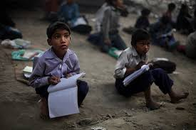

Indian education system is quite different from that of the foreign nations. The curriculum in the western countries is known to be quite light and based on practical knowledge whereas in India the focus is on theoretical knowledge and acquiring marks by hook or crook.
Students are expected to mug up chapter after chapter and fetch good grades in the class. The marking system in the Indian schools begins from the primary classes thereby burdening little kids. The competition is growing by the day. Parents want their children to outperform their peers and teachers want their class to do better than the other classes.
They are so blinded by the urge of staying ahead of the competition that they do not realize that they are pushing the children in the wrong direction. At an age when the students should be given the chance to explore their interests and hone their creative side, they are pressurized to follow a set curriculum and slog day and night to get good marks.
A survey named called the Annual Status of Education Report (ASER), shows that even though the number of rural students attending schools is rising, but more than half of the students in fifth grade are unable to read a second grade text book and are not able to solve simple mathematical problems. Not only this, the level of maths and reading is further declining.Quality and access to education is the major concern in rural schools as there are fewer committed teachers, lack of proper text books and learning material in the schools. Though Government schools exist, but when compared to private schools then quality is a major issue.